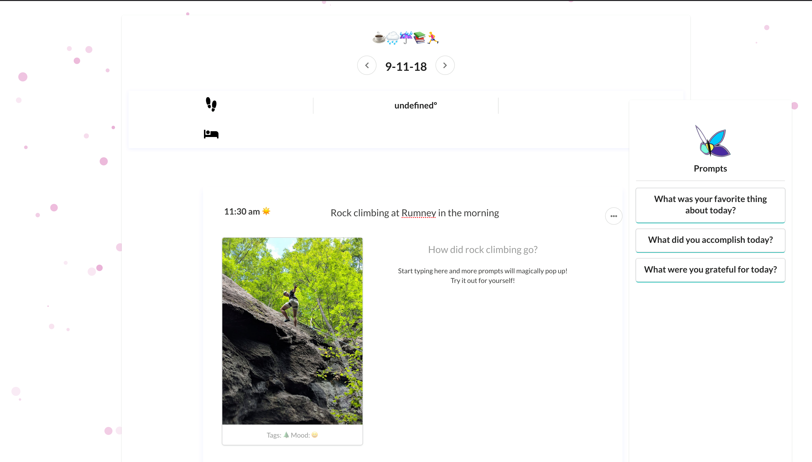

Lotus Journal is a self-writing journal At HackMIT 2018, Lotus Journal finished in the top 10 teams out of over 400 teams and 1250 hackers. Lotus Journal also won the Azure Champ prize from Microsoft and Most Interesting Use of Text-Based Machine Learning from Quora.
How Lotus Journal works:
- 1. User pictures are uploaded into a journal entry
- 2. We use image2text libraries and metadata from the pictures to generate a caption of what is going on in the picture, and if provided, location and date.
- 3. We use this information to generate headings and prompts. In the screenshot above, the user only provided the picture of a man climbing. Our algorithm was able to extract the activity, rock climbing, the location, Rumney, and time of day, morning. Based on this information, we were able to generate a heading and prompt.
- 4. As users type, the text is fed to my algorithm in real time. My algorithm does keyword extraction and matches them against the corpus of previous journal entries. My algorithm looks for similar temporal, locational, and linguistic keywords.
-
5. This keyword information is then passed through my rule-based system to generate grammatically correct open-ended questions geared towards reflection.
Example of generated question: "How was climbing today compared to 2 weeks ago in Wenatche, WA?"
Moving forward, we hope to turn this into a startup. We want to incorporate numerous data streams as users are able to provide them, data streams like fitbit data, sleep data, fitness and nutrition data, moods, progress tracking from apps like duolingo, etc. Over time, there will be plenty of user data on which machine learning can be conducted to find relationships and correlations. As we gain expertise in wellbeing, suggestions can be made to provide users insights into their lives.
-- Link to Github --